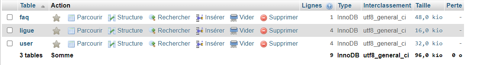
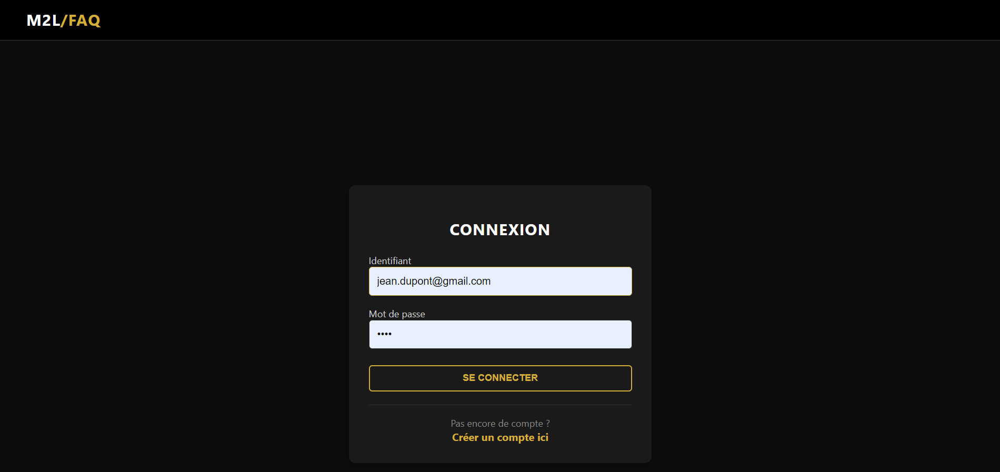
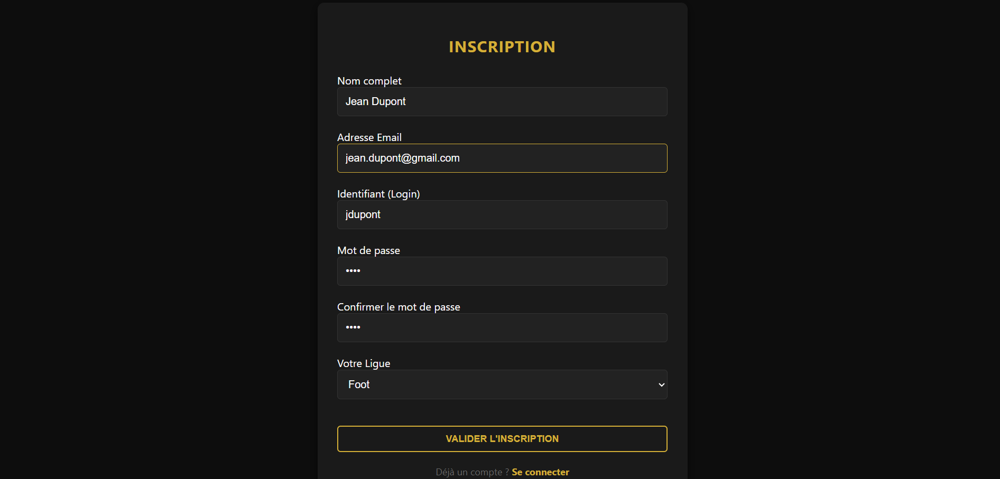
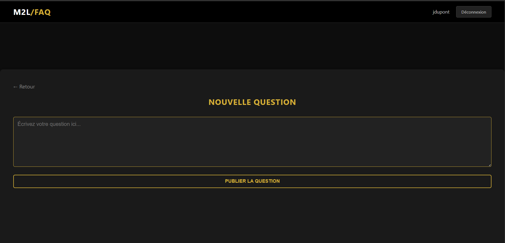
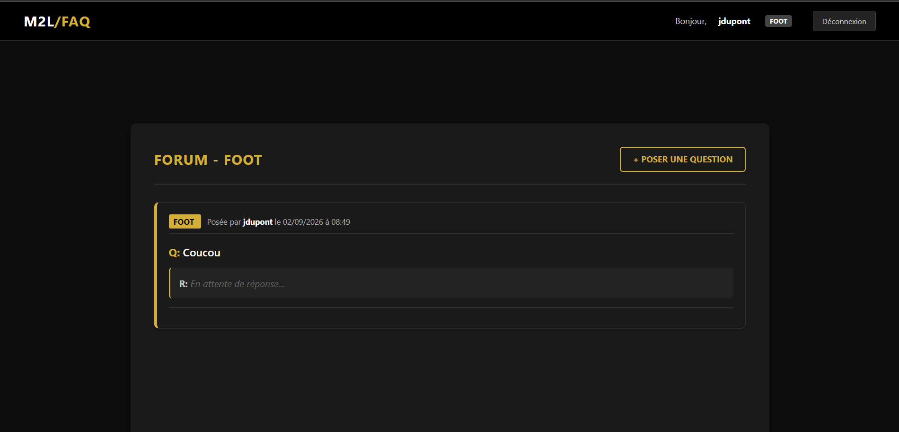

Travailler en mode projet
Contexte : Réalisation de projets informatiques collaboratifs et individuels (développement d'applications web, automatisation de scripts et requêtage sur serveur dédié).
Activité 1 : Application web FAQ — Maison des Ligues (M2L)
Cahier des charges : Conception et réalisation en équipe de 5 étudiants d'une plateforme centralisée de foire aux questions pour les membres et responsables de ligues sportives, intégrant une gestion stricte des droits (Visiteur, Admin Ligue, Super Admin).
Démarche et mode opératoire :
- Répartition des rôles au sein du groupe (conception BDD, maquettage IHM, authentification, modération et conteneurisation).
- Modélisation conceptuelle, logique et physique de la base de données (MCD, MLD, MPD) et implémentation des tables sous MySQL (
faq,ligue,user). - Développement collaboratif de l'application en PHP/MySQL avec architecture modulaire et requêtes préparées (PDO).
- Mise en place des formulaires d'authentification (connexion et inscription avec sélection de la ligue rattachée).
- Développement de l'interface d'échange (publication de questions et gestion des réponses selon le rôle en session) et déploiement sous Docker Compose.
Preuves de réalisation :
1. Structure de la base de données & Authentification

Figure 1 : Base MySQL (tables faq, ligue, user)

Figure 2 : Connexion utilisateur

Figure 3 : Inscription et choix de ligue
2. Fonctionnalités du forum et parcours utilisateur

Figure 5 : Rédaction d'une question

Figure 6 : Question publiée en attente
Activité 2 : Mini-projet base de données (SQL Server et PowerShell)
Cahier des charges : Concevoir une base de données de test sur le serveur SRV-SQLEAF-LAB (base MINIPROJET) et développer des scripts PowerShell autonomes capables d'interroger la base et d'exporter les résultats pour les métiers sans accès direct à SQL Server.
Démarche et mode opératoire :
- Conception des tables Employes et Services sous SQL Server avec clés primaires/étrangères et jeu de données de test.
- Rédaction de scripts PowerShell intégrant la commande
Invoke-Sqlcmdpour exécuter des requêtes dynamiques basées sur une saisie utilisateur (ex : choix du service). - Mise en place de calculs statistiques automatisés (nombre d'employés, masse salariale, salaire moyen via
COUNT,AVG,MAX). - Automatisation de l'extraction des données brutes vers des fichiers d'échange au format CSV (
Export-Csv).
Explication pour l'oral :
« Ce mini-projet m'a permis de lier le scripting PowerShell aux bases de données SQL Server. J'ai créé un script qui permet à un utilisateur non-technicien de saisir le nom d'un service, d'exécuter la requête en arrière-plan et d'obtenir immédiatement un fichier CSV exploitable contenant les données extraites. »
Preuves de réalisation :

Figure 7 : Commande PowerShell Get-ChildItem

Figure 8 : Export de la table des employés